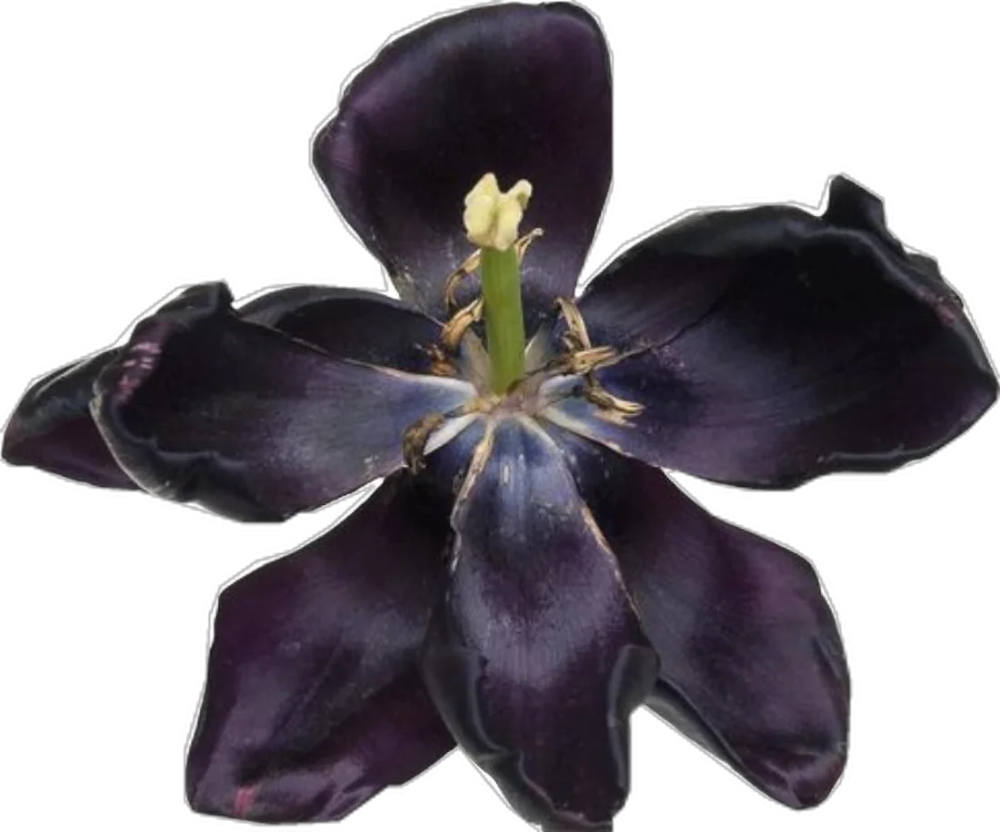
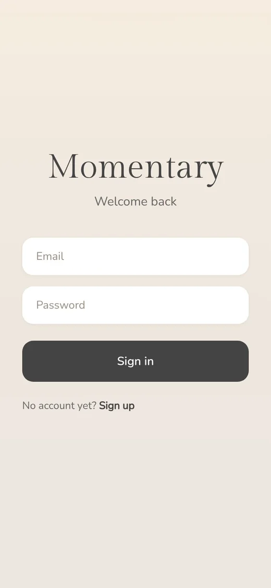
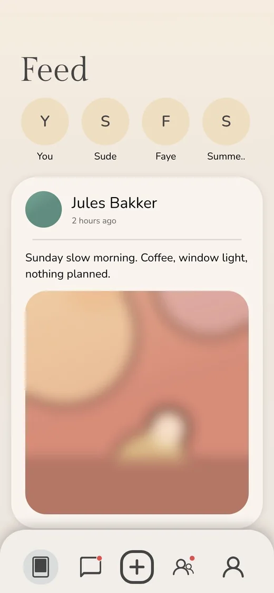
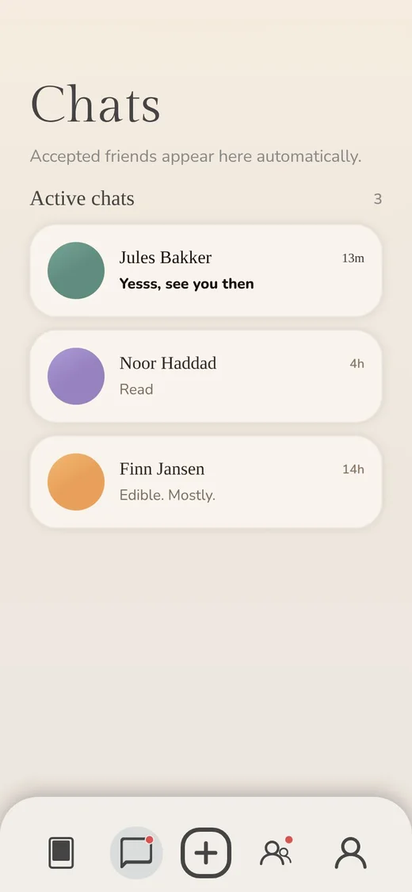
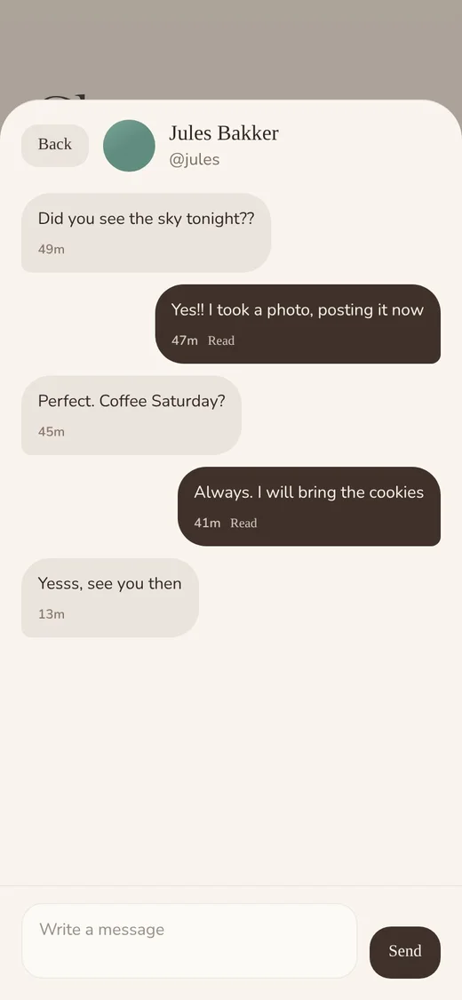
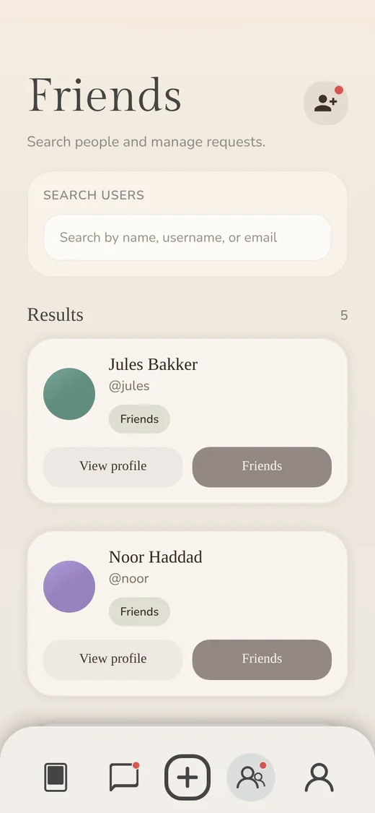
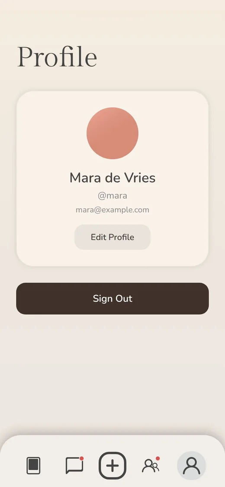

FILE_03 / MOMENTARY
Momentary
A peaceful diary you can share with friends.
01Context
Momentary is a peaceful digital diary where you can stay in touch with your friends. We wanted a mix of Notes, Airbuds and Instagram: somewhere to keep small moments, share them, and talk, without the noise of a feed.
We made it in second year, with four of us on one long project. It began as a Flutter prototype. Halfway through we switched to React Native with Expo, because we got React classes at school and could use what we were learning. A PHP REST API sits behind it.

02Research
Before any code, the questions were about behaviour: how people write things down, and what they are willing to show.
starting questions
- What does a calm social app feel like?

- How fast can you capture a moment?

- What stays private by default?
- How do friends talk without a feed?
03Sketches
Moodboard, colours and fonts, and the first mockups.
04Wireframes
05Build
The app is built with React Native and Expo. A PHP REST API sits behind it and handles the data. Moving from Flutter to React Native meant rebuilding the screens, but the structure carried over.
- P-01React Native + Expothe app itself
- P-02PHP REST APIaccounts, entries, notes
- P-03Flutter prototypethe first draft, kept for reference
06Result
A working app: post a moment, see what your friends share, add people, and chat with them. The screens below are taken from the real app.
If we were going to continue this project, we would add a more functional music system, let you share voice messages, and keep working on the aesthetics.

Login
Feed
Chats
Conversation
Friends
Profile
Screens from the app, with made-up demo people and photos.